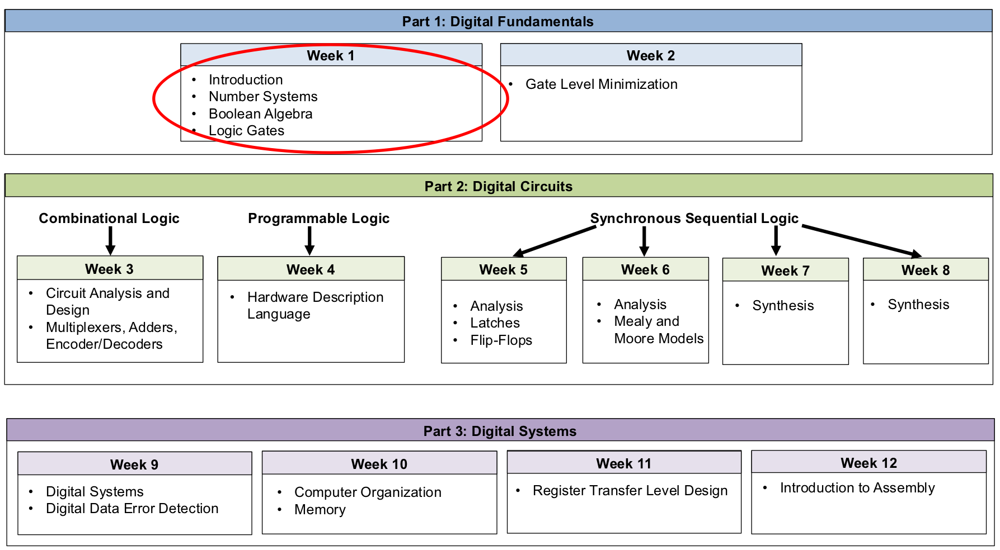
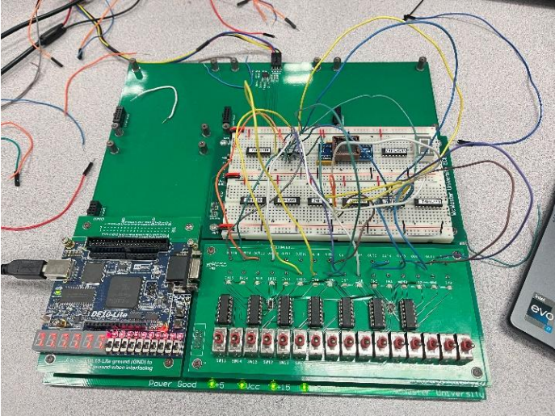
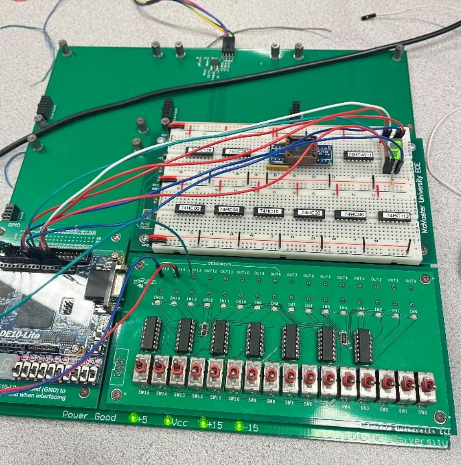

2DI4
Digital Logic Design
This course strengthened my understanding of digital systems by connecting theoretical logic design to real implementation. I worked through combinational logic, arithmetic circuits, HDL, and sequential systems, validating ideas through hardware testing and circuit behavior.
Project snapshot
The course moved from basic gate logic and simplification into more advanced digital design topics including multiplexers, full adders, HDL decoder implementation, and sequential behavior with counters and registers.

Course focus
Digital logic design, simplification, implementation, and verification.
My role
Designed, built, tested, and verified logic systems across both hardware and HDL work.
Main challenge
Turning abstract Boolean logic into real circuit behavior and validating each stage carefully.
Final outcome
A much stronger understanding of how logic becomes functioning digital hardware.
From basic logic to sequential systems
Foundations
Started with logic gates, equivalence, truth tables, and NAND/NOR reasoning.
Combinational design
Worked through Karnaugh maps, multiplexers, decoders, and arithmetic logic circuits.
HDL implementation
Applied digital design concepts through HDL-based logic and decoder work.
Sequential systems
Explored registers, counters, EEPROM-style behavior, and timing-driven digital output.

Arithmetic circuits

HDL & sequential design
What I built
- Truth table and logic gate analysis
- Karnaugh map simplification
- Multiplexer and decoder logic
- Half adder and full adder circuits
- 4-bit add/subtract design
- HDL logic modules
- Registers, counters, and EEPROM outputs
What improved most
This course improved how I think about systems structurally. I became more comfortable moving from simplified Boolean logic to full implementations, and more confident in validating designs through observed circuit behavior.
7-Segment Display Simulator
Toggle the four input bits to see the corresponding digit on the 7-segment display.
4-Bit Binary Adder
Toggle the bits of A, B, and carry-in to see the ripple-carry adder compute the sum.
Logic Gate Explorer
Toggle inputs A and B, then click a gate to see how the output changes.
Karnaugh Map Solver
Click cells to toggle 0/1. The minimized Boolean expression updates automatically.